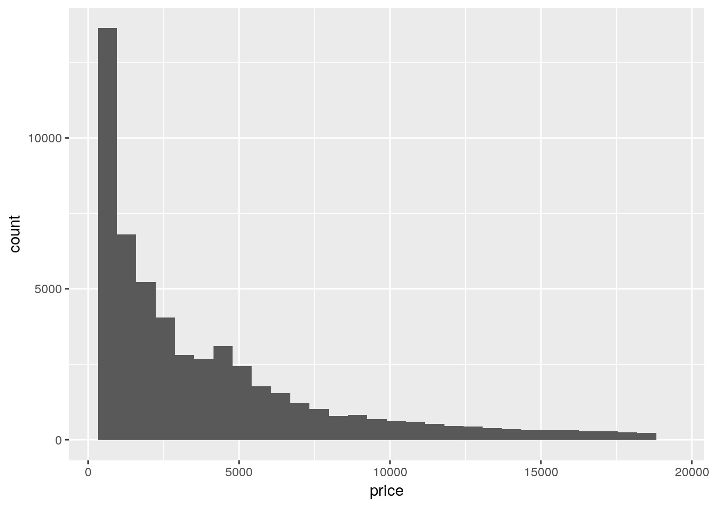
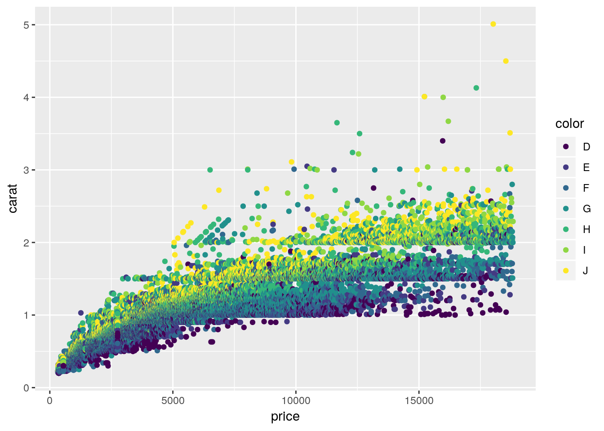

Bab 2 Paket ggplot2
2.1 Apa itu ggplot2?
ggplot2 adalah paket yang berfokus pada visualisasi statis. ggplot2 adalah paket R yang ditulis oleh Hadley Wickham. Bagian gg dari ggplot2 merupakan singkatan untuk Grammar of Graphics, buku oleh Leland Wilkinson. Paket ggplot2 banyak digunakan pada bagian visualisasi data.
ggplot2 mengaplikasikan suatu sistem pembuatan grafik yang disebut dengan The Grammar of Graphics. Pada sistem ini, gambar dilihat dan dibentuk lapisan demi lapisan. Ada 3 hal yang penting dari ggplot2, antara lain:
- data dalam bentuk tidy,
- aesthetics seperti koordinat x, dan y, shape, color, fill, shape, dan
- geoms yaitu objek geometrik seperti point, bar, dan line.
Pengguna memberikan data, aesthetics, dan jenis geoms dan ggplot2 akan mengatur sisanya.
2.2 Pemasangan ggplot2
ggplot2 adalah salah satu bagian dari tidyverse, paket R yang berfokus pada analisis data. Memasang tidyverse secara otomatis juga memasang ggplot2.
install.packages("tidyverse")Namun, Jika pembaca ingin hanya memasang paket ggplot2, berikut adalah cara untuk memasang paket ggplot2
install.packages("ggplot2")2.3 Penggunaan ggplot2
Dalam ggplot2, kita melihat plot atau grafik sebagai kumpulan lapisan atau layer. Banyak grafik yang dapat dihasilkan menggunakan ide atau teori ini; scatter plot, bar plot, lolipop chart , line chart, heatmap, map plot dan masih banyak lagi. Selain itu, ggplot2 adalah paket R, sehingga banyak orang membuat paket-paket pendamping ggplot2 untuk menghasilkan lebih banyak jenis plot; Treemap, animation, waffle chart, dan masih banyak lagi.
library(ggplot2)
#diamonds <- diamonds[1:1000,]
diamonds## # A tibble: 53,940 x 10
## carat cut color clarity depth table price x y z
## <dbl> <ord> <ord> <ord> <dbl> <dbl> <int> <dbl> <dbl> <dbl>
## 1 0.23 Ideal E SI2 61.5 55 326 3.95 3.98 2.43
## 2 0.21 Premium E SI1 59.8 61 326 3.89 3.84 2.31
## 3 0.23 Good E VS1 56.9 65 327 4.05 4.07 2.31
## 4 0.290 Premium I VS2 62.4 58 334 4.2 4.23 2.63
## 5 0.31 Good J SI2 63.3 58 335 4.34 4.35 2.75
## 6 0.24 Very Good J VVS2 62.8 57 336 3.94 3.96 2.48
## 7 0.24 Very Good I VVS1 62.3 57 336 3.95 3.98 2.47
## 8 0.26 Very Good H SI1 61.9 55 337 4.07 4.11 2.53
## 9 0.22 Fair E VS2 65.1 61 337 3.87 3.78 2.49
## 10 0.23 Very Good H VS1 59.4 61 338 4 4.05 2.39
## # … with 53,930 more rowsData diamonds – data built in dari paket ggplot2 – digunakan sebagai contoh. Terdapat beberapa variabel dalam data diamond, diantaranya
- carat : berat dari berlian
- cut : kualitas potongan
- color : Warna berlian, dari J (terburuk) ke D (terbaik)
- clarity : Ukuran seberapa jernih suatu berlian
- depth : persentase kedalaman
- table : lebar dari ujung atas berlian relatif terhadap titik terlebar
- price : harga berlian dalam USD.
- x : panjang dalam milimeter
- y : lebar dalam milimeter
- x : kedalaman dalam milimeter
Informasi lainnya mengendai data diamonds dapat dilihat dengan mengetik ?diamonds pada console. Misalkan kita ingin mengetahui sebaran dari harga berlian. Dengan menggunakan informasi yang tersedia, kita dapat mengidentifikasi lapisan data, aesthetics, dan geom untuk gambar yang kita butuhkan.
- data : diamonds
- aes : price
- geom : histogram
Dengan begitu, kita hanya perlu menyuruh R untuk membuat gambar.
ggdiamonds <- ggplot(data = diamonds, aes(x = price)) +
geom_histogram()
ggdiamonds## `stat_bin()` using `bins = 30`. Pick better value with `binwidth`.
Pada fungsi aes(), kita memasukkan sumbu x sebab kita hanya memerlukan 1 sumbu. Contoh berikutnya adalah menggunakan 2 sumbu. Misalkan kita ingin melihat pola antara harga (price) dan kualitas potongan dari berlian (cut). Arinyta kita akan membuat scatter plot antara price dan cut. Selama kita dapat mengidentifikasi lapisan yang diperlukan:
- data : diamonds
- aes : (x = price, y = cut)
- geom : point
Akan tetapi, kita juga ingin melihat pola antara harga har dan kualitas potongan, dan juga warna. Oleh karena itu, kita membuatuhkan satu aesthetic lagi pada goem point.
ggprice <- ggplot(data = diamonds, aes(x = price, y = carat)) +
geom_point(aes(colour = color))
ggprice